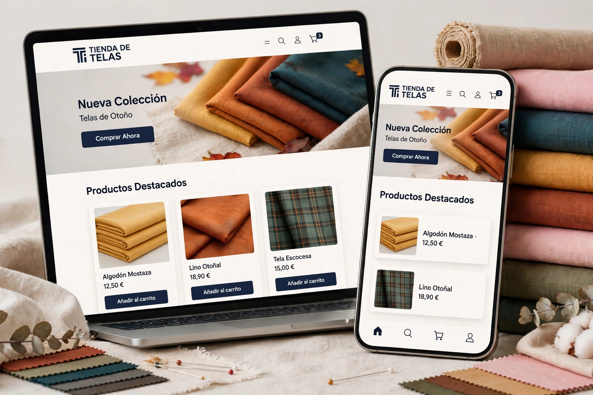

Tienda de telas
Temas responsive desde cero con HTML5, CSS3, JavaScript, Smarty y PHP.
Módulos a medida: carrito, filtros,
búsqueda y paginación.Fichas, landings y emails de alta conversión.
Automatización de catálogos con Excel +
PHP y sincronización de stock y precios con ERP.
UI/UX en Figma e integración en el tema.SEO on-page,
auditoría técnica, WPO y Google Ads.
Contenido escalable con IA para blog, banners y ficha